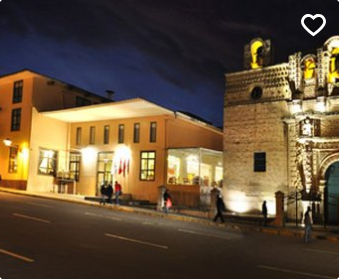
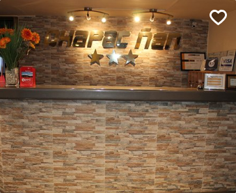
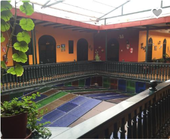
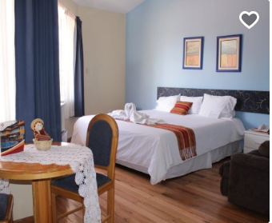

Hoteles
-

Wyndham Costa Del Sol Cajamarca
Restaurante, Transporte desde/al aeropuerto, Hotel de 4 estrellas, ubicado en
Jr. Cruz de Piedra 707, Cajamarca, Perú -

Qhapac Nan Hotel
Servicio de habitación Bar/Salón Hotel de 3 estrellas, ubicado en
Jr. Los Nogales 326 - Villa Universitaria | Jr. Los Nogales 326 - Villa Universitaria, Cajamarca 76, Perú -

Casona del Inca
ubicada en
>Jr. Dos de Mayo 460, Plaza de Armas, Cajamarca, Perú -

Hacienda Hotel San Antonio
ubicada en
Tartar grande Banos del Inca | Alt. Km. 5 carretera a Banos del Inca, Cajamarca 076, Perú
RESTAURANTES
La campiña restauran en Cajamarca ubicado en
Av. hoyos rubio 1800venga a disfrutar nuestro exquisito ceviche en el restaurant la campiña
El restaurant de Puruay le espera con gran gusto en sus instalaciones para digustar sus excelentes sabores
Decicamos nuestos sabores a nuestros clientes para la satisfaccion de sus paladares, somos Zarco Restaurante/p>
Historia de Cajamarca
La ciudad de Cajamarca, capital del departamento del mismo nombre, se ubica en el valle del río Mashcón, en la vertiente occidental de los Andes del norte. Su nombre, de origen quechua, significa "tierra fría". Es imposible referirse a ella sin mencionar su rica historia, su espléndida arquitectura y los pintorescos paisajes que la rodean, motivo de inspiración de renombrados pintores locales. Los cajamarquinos, además, son las personas más hospitalarias y alegres de la sierra peruana. Quien quiera comprobarlo, visite la ciudad en febrero, durante los carnavales.
Los vestigios humanos más antiguos en esta región datan de hace unos 3000 años, cuando la zona recibió una fuerte influencia de la cultura Cupisnique y, posteriormente, de la Chavín. Desde los inicios de la era cristiana, Cajamarca estableció vínculos muy estrechos con las culturas de la costa norte. Hacia los siglos VI y VII d.C., recibió influencias de la cultura Wari (cuyo centro de desarrollo se hallaba en Ayacucho) y en s. XIII fue el centro de una confederación de reinos independientes que se extendía hasta el río Alto Marañón. Hacia 1450, y tras una fuerte resistencia, la región fue anexada al imperio incaico y Cajamarca pasó a ser un importante centro administrativo y un sitio de descanso de la realeza cusqueña.